lorenz_full3_additive_p30_nearid_tf__lc_x_obsnoisescale_sweep_20260429T163249Z__stage_b_v2Project: Lorenz_INDall_N1_D1_NormTrue_T3__JacobianODE
Launched: 2026-04-29T20:16:33Z
Completed: 2026-04-30T00:40:26Z
Outcome: complete_clean
Git: latent-JacobianODE @ 547e96e
Expected runs: 20
lorenz_full3_additive_p30_nearid_tf__lc_x_obsnoisescale_sweepDescription
Fully-observed Lorenz (3 dims, no delay embedding). Monolithic CouplingEncoder (additive coupling, 8 layers, hidden_dim=128), near_identity_std=1e-3, final_perm_identity=true. 21-cell sweep over 7 LC x 3 obs_noise_scale. TF-coupled LR schedule (k_scale=1). Two-stage protocol with dual-checkpoint (primary ES patience=5, shadow-freeze patience=2). Same recipe as the matched WMTask 128->128 sweep.
Hypothesis
If the orig recipe (TF-coupled LR, mean ~5e-5 effective in the high-LR phase) is portable, Lorenz 3->3 should hit good Lyapunov spectrum recovery across the LC x obs_noise grid without spectrum compression in Stage B. Recovery of all three Lyapunov exponents (positive, zero, negative) within ~30% of empirical is the success bar — same standard the existing lorenz_full_additive_mse_p30 sweep was held to. This sweep is the matched-recipe Lorenz control for the WMTask sweep.
Success criteria
Swept axes (4): data.postprocessing.generalized_variance, training.ckpt_path, training.lightning.loop_closure_weight, training.lightning.obs_noise_scale
Chosen run (by best_traj_loss): — — traj_loss=—, MASE=—, R²=—, LC loss=—, epoch=None
⚠️ Matched-run count mismatch: expected 20 run_idx slots per the sentinel, matched 0 in wandb. The sweep may still be in progress, or some slots failed without producing wandb evidence.
⚠️ 20 wandb run(s) did not match any run_idx (excluded from the per-run table). These are most likely orphans from preempt-cycle retries or rate-limit re-launches. IDs: ns3oemeh, xkek49op, dwc7gyzg, rfgvlux6, 1tpna0aj, jgxjbcts, 7ovbxdp6, rtvlj942, wxdvyoer, bj74zrib, nsrge5k3, azusct0j, k5r5ht7g, dwrnbwye, vh99tggu, jmowdzr9, qryc46jm, zhqtfhir, 0an4tjwg, fan63ojh.
Runs analyzed: 0 (expected 20)
| Criterion | Verdict | Note |
|---|---|---|
| All 21 cells train without divergence | Unknown | |
| es2-best.ckpt and es5-best.ckpt both saved per cell | Unknown | |
| Best run's predicted Lyapunov spectrum within ~30% of empirical | Unknown | |
| Lyapunov spectrum NOT compressed in Stage B vs Stage A | Unknown | |
| Result shape is consistent with the matched WMTask sweep (LC dependence, init effect) | Unknown |
Automated verdicts use simple numeric-threshold parsing and may mis-classify qualitative criteria. The Discussion section below takes precedence.
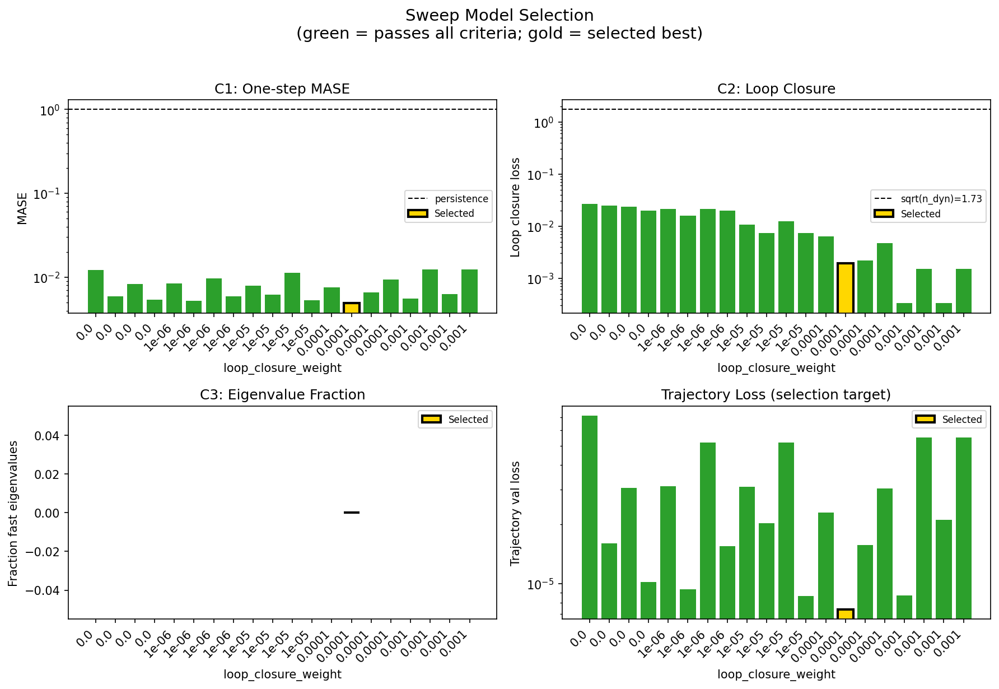
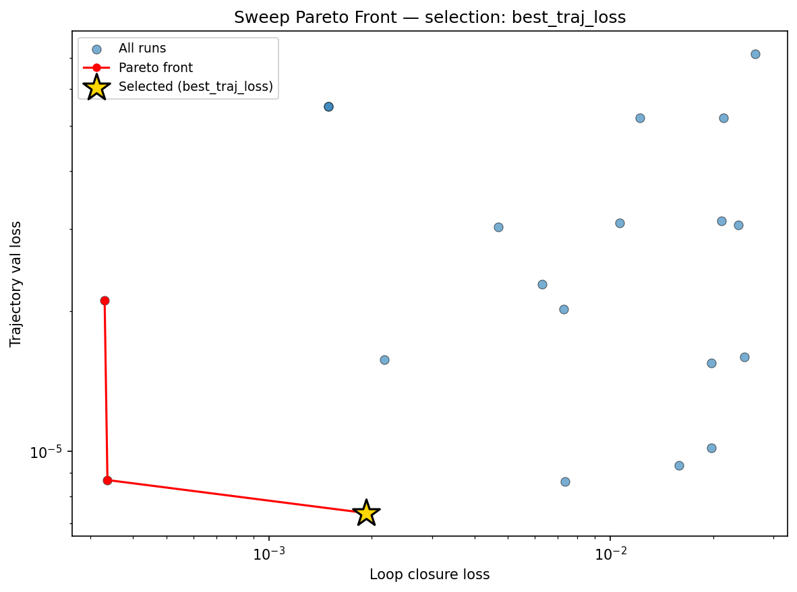
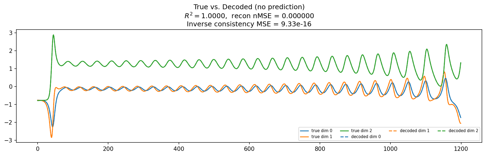
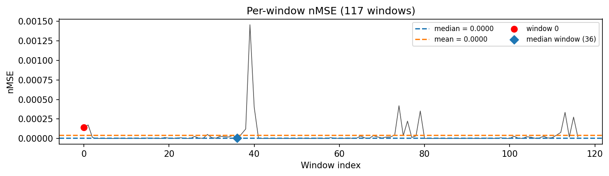
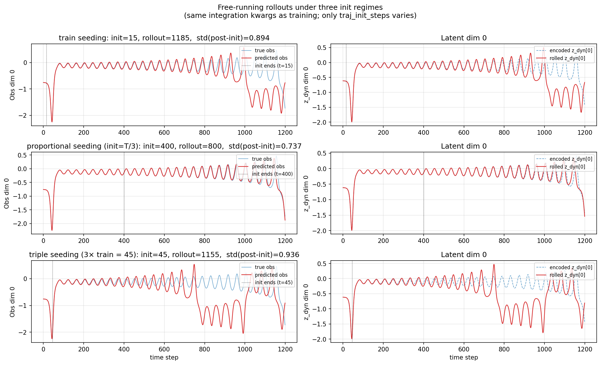
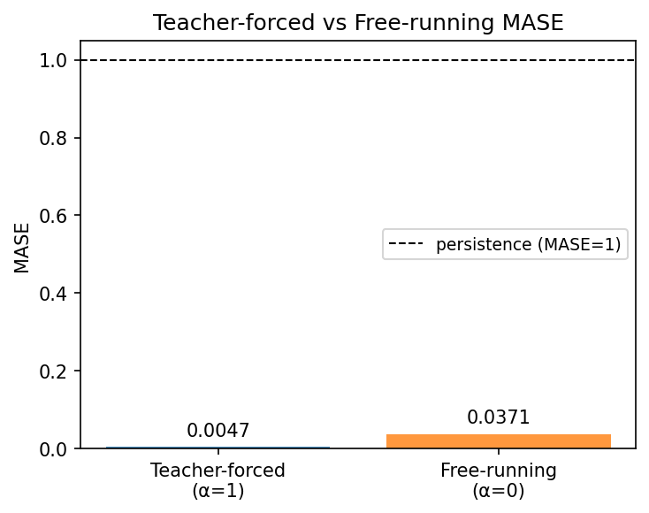
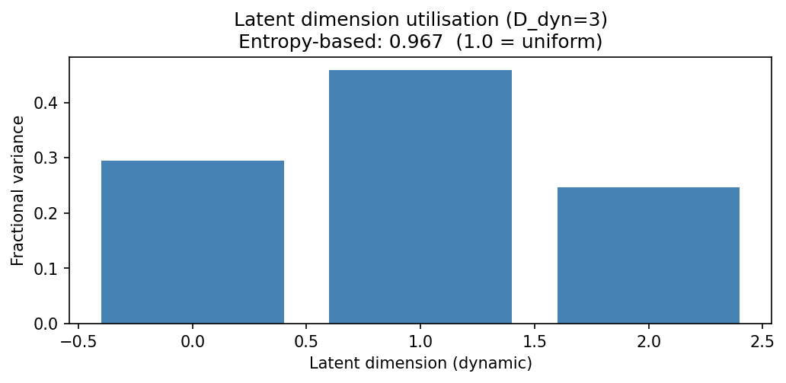
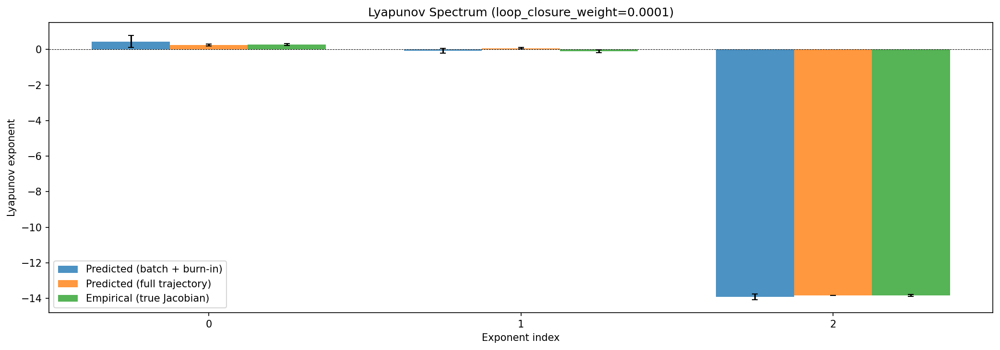
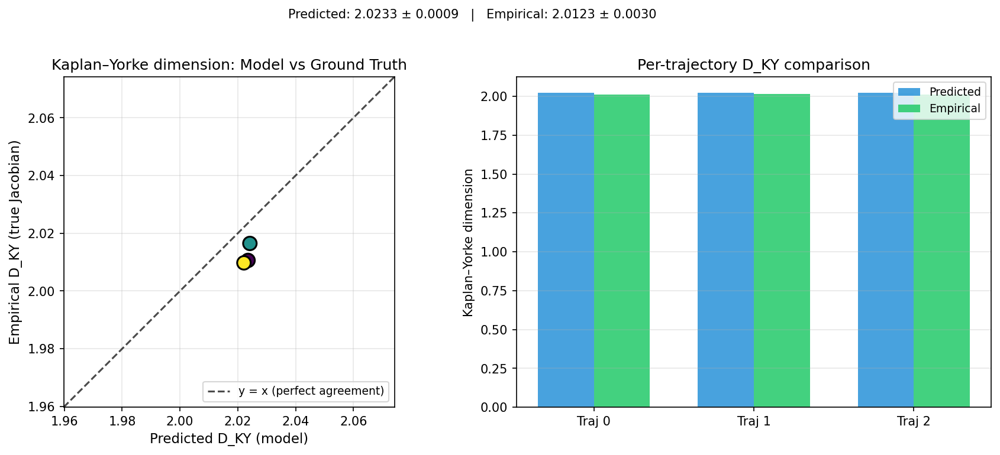
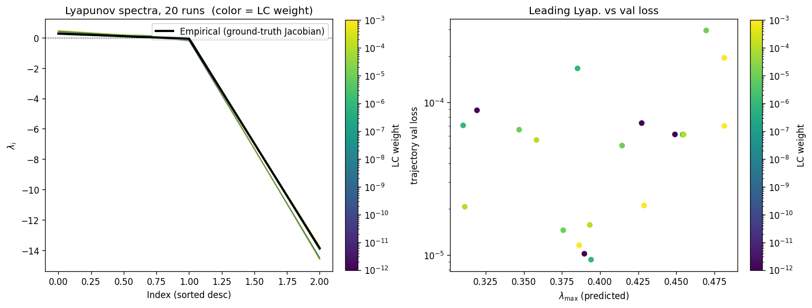
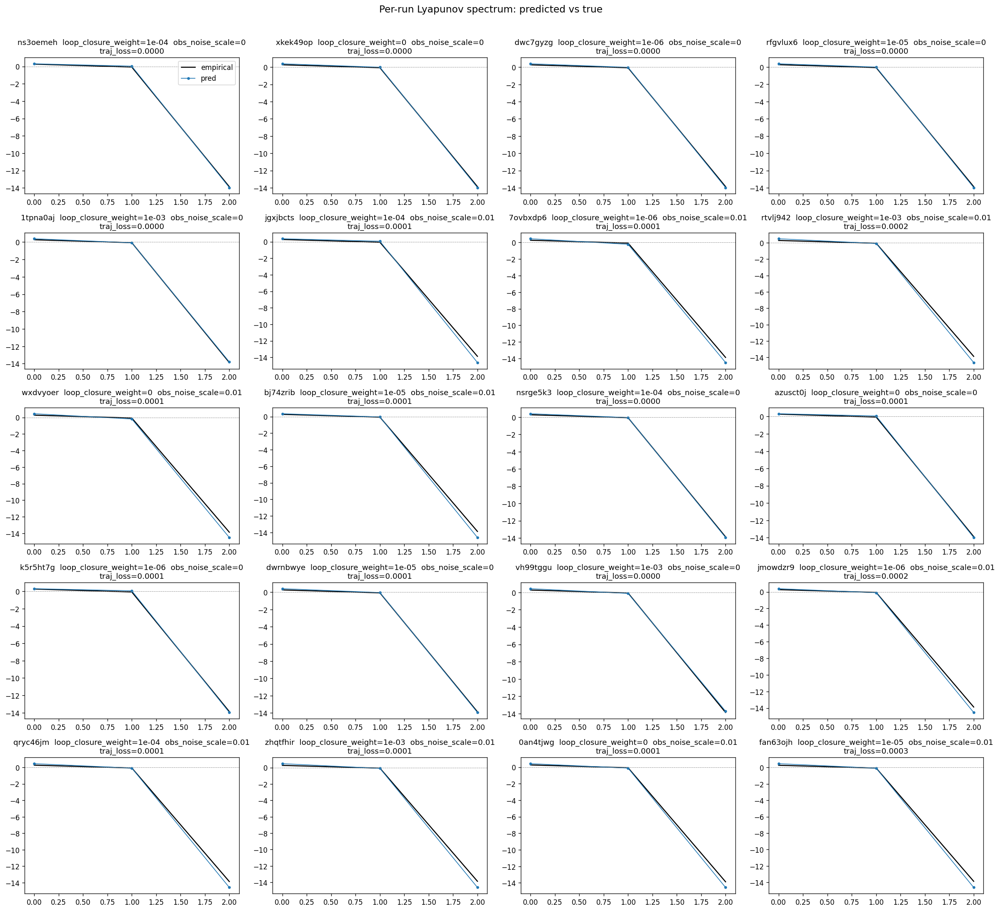
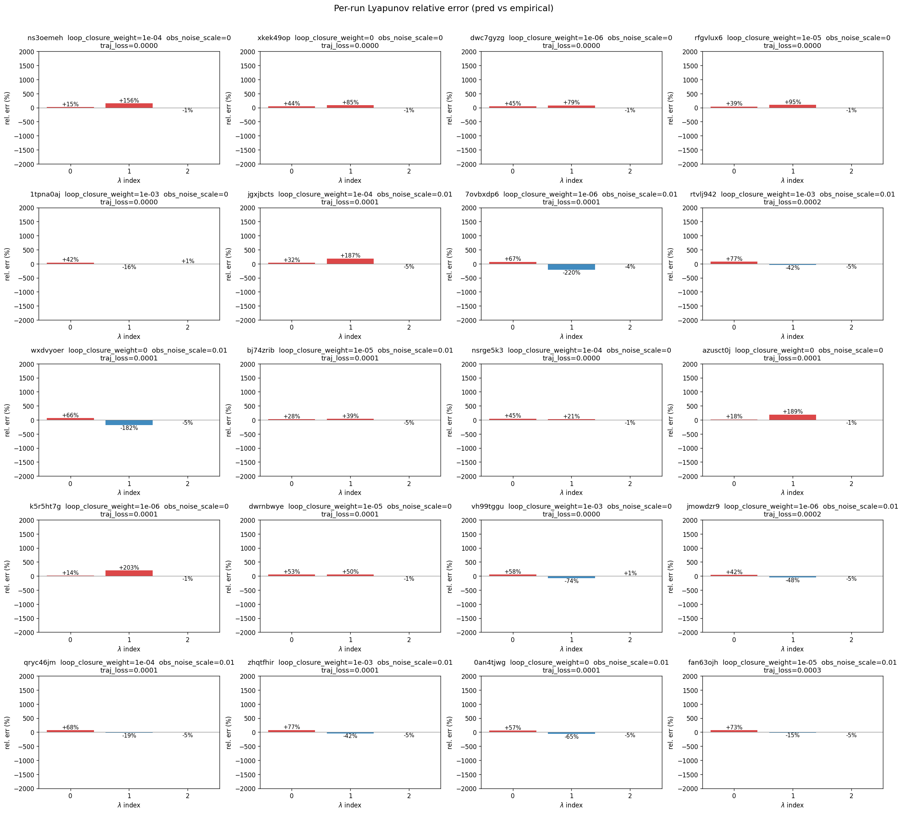
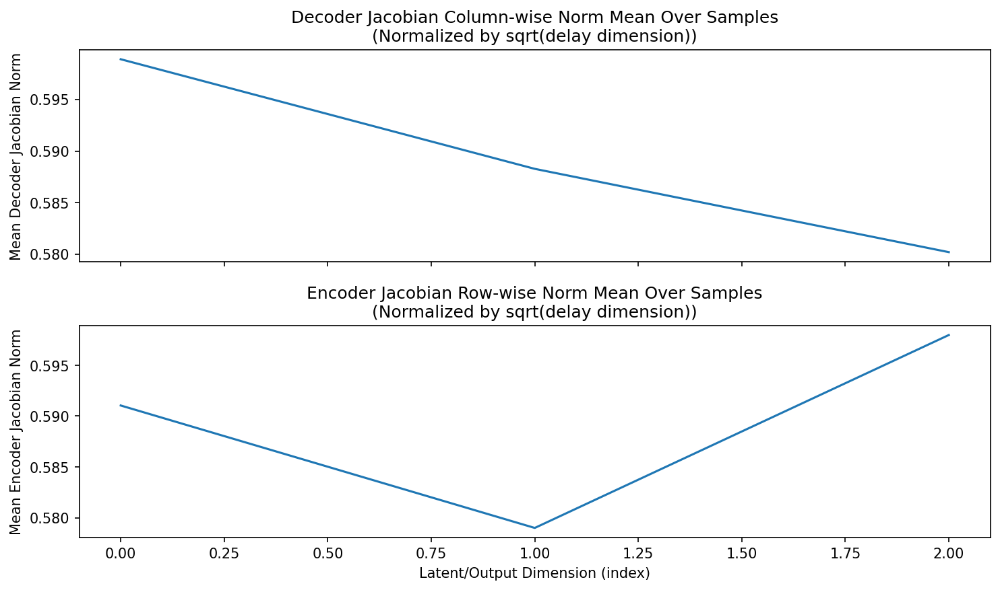
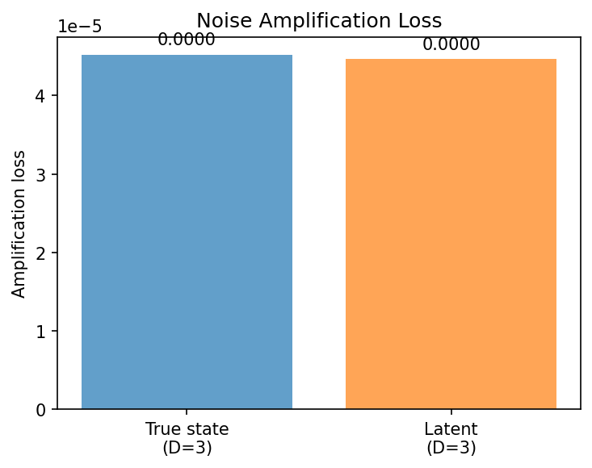
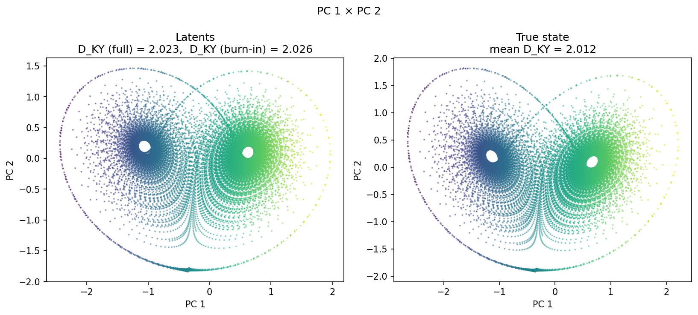
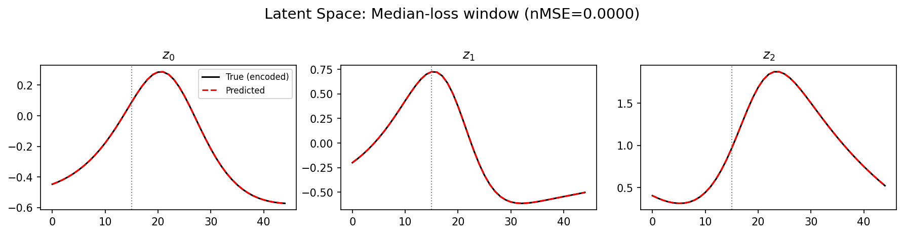
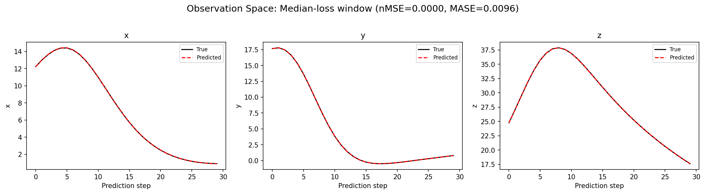
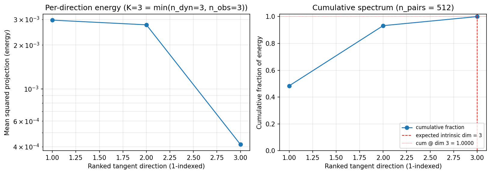
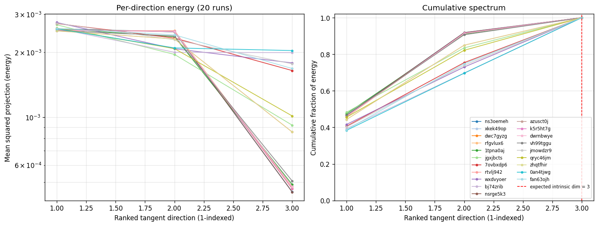
(to be written)
run_analytics stdoutrun_analyticsNo run_id provided — selecting best run from group 'lorenz_full3_additive_p30_nearid_tf__lc_x_obsnoisescale_sweep_20260429T163249Z__stage_b_v2' ...
Found 20 total runs in JacobianODE/Lorenz_INDall_N1_D1_NormTrue_T3__JacobianODE (group=lorenz_full3_additive_p30_nearid_tf__lc_x_obsnoisescale_sweep_20260429T163249Z__stage_b_v2)
All runs (state, loop_closure_weight, tangent_entropy_weight, kl_dyn_weight):
ns3oemeh: state=finished, lc=0.0001, te=0.0, kl_dyn=0.0
xkek49op: state=finished, lc=0.0, te=0.0, kl_dyn=0.0
dwc7gyzg: state=finished, lc=1e-06, te=0.0, kl_dyn=0.0
rfgvlux6: state=finished, lc=1e-05, te=0.0, kl_dyn=0.0
1tpna0aj: state=finished, lc=0.001, te=0.0, kl_dyn=0.0
jgxjbcts: state=finished, lc=0.0001, te=0.0, kl_dyn=0.0
7ovbxdp6: state=finished, lc=1e-06, te=0.0, kl_dyn=0.0
rtvlj942: state=crashed, lc=0.001, te=0.0, kl_dyn=0.0
wxdvyoer: state=finished, lc=0.0, te=0.0, kl_dyn=0.0
bj74zrib: state=finished, lc=1e-05, te=0.0, kl_dyn=0.0
nsrge5k3: state=crashed, lc=0.0001, te=0.0, kl_dyn=0.0
azusct0j: state=crashed, lc=0.0, te=0.0, kl_dyn=0.0
k5r5ht7g: state=crashed, lc=1e-06, te=0.0, kl_dyn=0.0
dwrnbwye: state=crashed, lc=1e-05, te=0.0, kl_dyn=0.0
vh99tggu: state=crashed, lc=0.001, te=0.0, kl_dyn=0.0
jmowdzr9: state=crashed, lc=1e-06, te=0.0, kl_dyn=0.0
qryc46jm: state=crashed, lc=0.0001, te=0.0, kl_dyn=0.0
zhqtfhir: state=finished, lc=0.001, te=0.0, kl_dyn=0.0
0an4tjwg: state=crashed, lc=0.0, te=0.0, kl_dyn=0.0
fan63ojh: state=crashed, lc=1e-05, te=0.0, kl_dyn=0.0
slurm_timeout_min not found in any run config — falling back to 180 min
Including ns3oemeh (lc=0.0001): use_all_runs=True (state=finished)
Including xkek49op (lc=0.0): use_all_runs=True (state=finished)
Including dwc7gyzg (lc=1e-06): use_all_runs=True (state=finished)
Including rfgvlux6 (lc=1e-05): use_all_runs=True (state=finished)
Including 1tpna0aj (lc=0.001): use_all_runs=True (state=finished)
Including jgxjbcts (lc=0.0001): use_all_runs=True (state=finished)
Including 7ovbxdp6 (lc=1e-06): use_all_runs=True (state=finished)
Including rtvlj942 (lc=0.001): use_all_runs=True (state=crashed)
Including wxdvyoer (lc=0.0): use_all_runs=True (state=finished)
Including bj74zrib (lc=1e-05): use_all_runs=True (state=finished)
Including nsrge5k3 (lc=0.0001): use_all_runs=True (state=crashed)
Including azusct0j (lc=0.0): use_all_runs=True (state=crashed)
Including k5r5ht7g (lc=1e-06): use_all_runs=True (state=crashed)
Including dwrnbwye (lc=1e-05): use_all_runs=True (state=crashed)
Including vh99tggu (lc=0.001): use_all_runs=True (state=crashed)
Including jmowdzr9 (lc=1e-06): use_all_runs=True (state=crashed)
Including qryc46jm (lc=0.0001): use_all_runs=True (state=crashed)
Including zhqtfhir (lc=0.001): use_all_runs=True (state=finished)
Including 0an4tjwg (lc=0.0): use_all_runs=True (state=crashed)
Including fan63ojh (lc=1e-05): use_all_runs=True (state=crashed)
Found 20 effectively-done sweep runs:
loop_closure_weight=0.0, tangent_entropy_weight=0.0, kl_dyn_weight=0.0 -> run_id=0an4tjwg
loop_closure_weight=0.0, tangent_entropy_weight=0.0, kl_dyn_weight=0.0 -> run_id=azusct0j
loop_closure_weight=0.0, tangent_entropy_weight=0.0, kl_dyn_weight=0.0 -> run_id=wxdvyoer
loop_closure_weight=0.0, tangent_entropy_weight=0.0, kl_dyn_weight=0.0 -> run_id=xkek49op
loop_closure_weight=1e-06, tangent_entropy_weight=0.0, kl_dyn_weight=0.0 -> run_id=7ovbxdp6
loop_closure_weight=1e-06, tangent_entropy_weight=0.0, kl_dyn_weight=0.0 -> run_id=dwc7gyzg
loop_closure_weight=1e-06, tangent_entropy_weight=0.0, kl_dyn_weight=0.0 -> run_id=jmowdzr9
loop_closure_weight=1e-06, tangent_entropy_weight=0.0, kl_dyn_weight=0.0 -> run_id=k5r5ht7g
loop_closure_weight=1e-05, tangent_entropy_weight=0.0, kl_dyn_weight=0.0 -> run_id=bj74zrib
loop_closure_weight=1e-05, tangent_entropy_weight=0.0, kl_dyn_weight=0.0 -> run_id=dwrnbwye
loop_closure_weight=1e-05, tangent_entropy_weight=0.0, kl_dyn_weight=0.0 -> run_id=fan63ojh
loop_closure_weight=1e-05, tangent_entropy_weight=0.0, kl_dyn_weight=0.0 -> run_id=rfgvlux6
loop_closure_weight=0.0001, tangent_entropy_weight=0.0, kl_dyn_weight=0.0 -> run_id=jgxjbcts
loop_closure_weight=0.0001, tangent_entropy_weight=0.0, kl_dyn_weight=0.0 -> run_id=ns3oemeh
loop_closure_weight=0.0001, tangent_entropy_weight=0.0, kl_dyn_weight=0.0 -> run_id=nsrge5k3
loop_closure_weight=0.0001, tangent_entropy_weight=0.0, kl_dyn_weight=0.0 -> run_id=qryc46jm
loop_closure_weight=0.001, tangent_entropy_weight=0.0, kl_dyn_weight=0.0 -> run_id=1tpna0aj
loop_closure_weight=0.001, tangent_entropy_weight=0.0, kl_dyn_weight=0.0 -> run_id=rtvlj942
loop_closure_weight=0.001, tangent_entropy_weight=0.0, kl_dyn_weight=0.0 -> run_id=vh99tggu
loop_closure_weight=0.001, tangent_entropy_weight=0.0, kl_dyn_weight=0.0 -> run_id=zhqtfhir
n_dims=3, n_latent=3, n_dyn=3, dt=0.0150
run=0an4tjwg: DiagnosticMetrics(one_step_mase=0.012132883071899414, loop_closure_loss=0.02649315446615219, fast_eigenvalue_fraction=0.0, trajectory_val_loss=7.1232883783523e-05) (from W&B history)
run=azusct0j: DiagnosticMetrics(one_step_mase=0.005904271733015776, loop_closure_loss=0.024699682369828224, fast_eigenvalue_fraction=0.0, trajectory_val_loss=1.5947531210258603e-05) (from W&B history)
run=wxdvyoer: DiagnosticMetrics(one_step_mase=0.00835893303155899, loop_closure_loss=0.023637492209672928, fast_eigenvalue_fraction=0.0, trajectory_val_loss=3.064046541112475e-05) (from W&B history)
run=xkek49op: DiagnosticMetrics(one_step_mase=0.005365354940295219, loop_closure_loss=0.019711218774318695, fast_eigenvalue_fraction=0.0, trajectory_val_loss=1.017992508423049e-05) (from W&B history)
run=7ovbxdp6: DiagnosticMetrics(one_step_mase=0.008432834409177303, loop_closure_loss=0.02108641341328621, fast_eigenvalue_fraction=0.0, trajectory_val_loss=3.12143711198587e-05) (from W&B history)
run=dwc7gyzg: DiagnosticMetrics(one_step_mase=0.005256909877061844, loop_closure_loss=0.015901917591691017, fast_eigenvalue_fraction=0.0, trajectory_val_loss=9.314419003203511e-06) (from W&B history)
run=jmowdzr9: DiagnosticMetrics(one_step_mase=0.009724200703203678, loop_closure_loss=0.02141467295587063, fast_eigenvalue_fraction=0.0, trajectory_val_loss=5.191246964386664e-05) (from W&B history)
run=k5r5ht7g: DiagnosticMetrics(one_step_mase=0.005926529876887798, loop_closure_loss=0.019723787903785706, fast_eigenvalue_fraction=0.0, trajectory_val_loss=1.5493360479013063e-05) (from W&B history)
run=bj74zrib: DiagnosticMetrics(one_step_mase=0.007979769259691238, loop_closure_loss=0.010614760220050812, fast_eigenvalue_fraction=0.0, trajectory_val_loss=3.095886131632142e-05) (from W&B history)
run=dwrnbwye: DiagnosticMetrics(one_step_mase=0.0062155090272426605, loop_closure_loss=0.007307735737413168, fast_eigenvalue_fraction=0.0, trajectory_val_loss=2.0187373593216762e-05) (from W&B history)
run=fan63ojh: DiagnosticMetrics(one_step_mase=0.011355426162481308, loop_closure_loss=0.012214225716888905, fast_eigenvalue_fraction=0.0, trajectory_val_loss=5.1993076340295374e-05) (from W&B history)
run=rfgvlux6: DiagnosticMetrics(one_step_mase=0.0053253029473125935, loop_closure_loss=0.007374939974397421, fast_eigenvalue_fraction=0.0, trajectory_val_loss=8.608451025793329e-06) (from W&B history)
run=jgxjbcts: DiagnosticMetrics(one_step_mase=0.007591974455863237, loop_closure_loss=0.006308683659881353, fast_eigenvalue_fraction=0.0, trajectory_val_loss=2.286830022057984e-05) (from W&B history)
run=ns3oemeh: DiagnosticMetrics(one_step_mase=0.004896851722151041, loop_closure_loss=0.0019279229454696178, fast_eigenvalue_fraction=0.0, trajectory_val_loss=7.368048954958795e-06) (from W&B history)
run=nsrge5k3: DiagnosticMetrics(one_step_mase=0.006589199882000685, loop_closure_loss=0.002173523185774684, fast_eigenvalue_fraction=0.0, trajectory_val_loss=1.5720868759672157e-05) (from W&B history)
run=qryc46jm: DiagnosticMetrics(one_step_mase=0.009409409947693348, loop_closure_loss=0.004699689336121082, fast_eigenvalue_fraction=0.0, trajectory_val_loss=3.0322655220516026e-05) (from W&B history)
run=1tpna0aj: DiagnosticMetrics(one_step_mase=0.0055517214350402355, loop_closure_loss=0.00033643245114944875, fast_eigenvalue_fraction=0.0, trajectory_val_loss=8.674825949128717e-06) (from W&B history)
run=rtvlj942: DiagnosticMetrics(one_step_mase=0.012419477105140686, loop_closure_loss=0.0014897194923833013, fast_eigenvalue_fraction=0.0, trajectory_val_loss=5.5021308071445674e-05) (from W&B history)
run=vh99tggu: DiagnosticMetrics(one_step_mase=0.006300054024904966, loop_closure_loss=0.0003301126998849213, fast_eigenvalue_fraction=0.0, trajectory_val_loss=2.108022090396844e-05) (from W&B history)
run=zhqtfhir: DiagnosticMetrics(one_step_mase=0.012419477105140686, loop_closure_loss=0.0014897194923833013, fast_eigenvalue_fraction=0.0, trajectory_val_loss=5.5021308071445674e-05) (from W&B history)
Ranking method: best_traj_loss
Best run ID: ns3oemeh
Best loop_closure_weight: 0.0001
Best tangent_entropy_weight: 0.0
Best kl_dyn_weight: 0.0
Best traj loss: 0.000007
Criteria applied: ['C1', 'C2', 'C3']
Surviving: 20 / 20
Auto-selected run_id: ns3oemeh
======================================================================
PARETO FRONTIER RUNS (3 runs)
======================================================================
Run ID LC Loss Traj Val Loss
------------ -------------- --------------
vh99tggu 0.000330 0.000021
1tpna0aj 0.000336 0.000009
ns3oemeh 0.001928 0.000007 <-- selected
======================================================================
RANKING METHOD COMPARISON (over 20 survivors)
======================================================================
Method Run ID LC Loss Traj Val Loss
---------------------- ------------ -------------- --------------
best_traj_loss ns3oemeh 0.001928 0.000007 <-- active
pareto_knee 1tpna0aj 0.000336 0.000009
geo_rank ns3oemeh 0.001928 0.000007
minimax_rank 1tpna0aj 0.000336 0.000009
geo_log_score ns3oemeh 0.001928 0.000007
minimax_log_score 1tpna0aj 0.000336 0.000009
======================================================================
Loading run ns3oemeh from JacobianODE/Lorenz_INDall_N1_D1_NormTrue_T3__JacobianODE ...
Loading checkpoint epoch=97-step=19600.ckpt...
Train dataset shape: torch.Size([25410, 45, 3])
Validation dataset shape: torch.Size([8085, 45, 3])
Test dataset shape: torch.Size([3465, 45, 3])
Train trajectories dataset shape: torch.Size([22, 1200, 3])
Validation trajectories dataset shape: torch.Size([7, 1200, 3])
Test trajectories dataset shape: torch.Size([3, 1200, 3])
Loading checkpoint epoch=97-step=19600.ckpt...
Computing reconstruction ...
Computing MASE ...
Teacher-forced MASE: 0.0047
Free-running MASE: 0.0371
Computing latent utilization ...
Entropy-based utilization: 0.967
Computing Lyapunov exponents ...
Computing full-trajectory Lyapunov (3 test trajs, T=1200) ...
Predicted Lyapunov exponents (batch+burn-in, 128 windowed trajs):
λ_1 = +0.4501 ± 0.3357
λ_2 = -0.0795 ± 0.1391
λ_3 = -13.8964 ± 0.1608
Predicted Lyapunov exponents (full-length, 3 test trajs):
λ_1 = +0.2475 ± 0.0570
λ_2 = +0.0744 ± 0.0507
λ_3 = -13.8257 ± 0.0103
Empirical Lyapunov exponents (mean ± std):
λ_1 = +0.2716 ± 0.0605
λ_2 = -0.1016 ± 0.0797
λ_3 = -13.8370 ± 0.0514
Mean KY dim (predicted): 2.023 ± 0.001
Mean KY dim (empirical): 2.012 ± 0.003
Mean KY dim (burn-in): 2.026 ± 0.019
Computing prediction windows ...
Windows: 117 — nMSE min=0.0000, median=0.0000, mean=0.0000, max=0.0015
Computing long-trajectory free-running rollouts ...
Computing encoder/decoder Jacobians ...
encoder_jacobian: (128, 3, 3)
decoder_jacobian: (128, 3, 3)
Computing amplification loss ...
Amplification loss — True state: 0.000045
Amplification loss — Latent: 0.000045
Computing tangent space spectrum ...